Atlas Map ForgeZero-K map generator and map editor
Build complete, playable maps for the RTS Zero-K in minutes: pick one of 30 templates, adjust the settings, shape the terrain by hand and press Build. The map lands in your Zero-K maps folder, ready to play.
Free and open source (GPL 2.0 or later). One file, no installation, no Python needed. Pre-release: feedback is welcome.
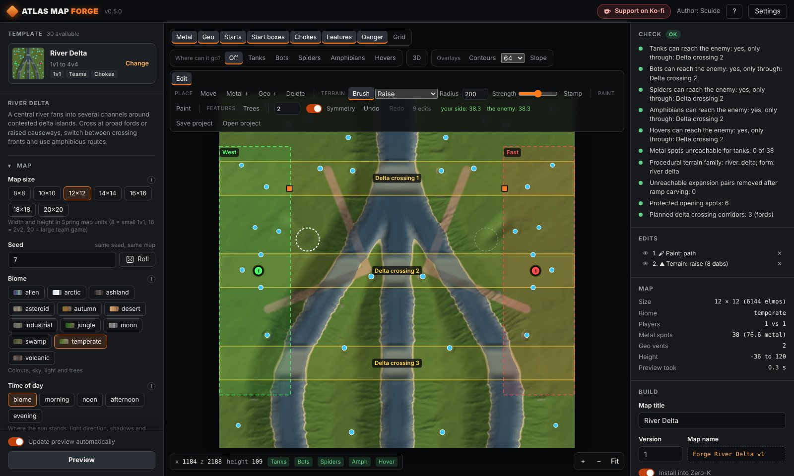
What it does
A complete map, not just a heightmap: texture, minimap, metal spots, geothermal vents, start boxes, trees and optional map gadgets, packed as a ready-to-play .sdz file.
30 templates
Land, sea, chokepoints, rivers, islands, free-for-all for 3 to 8 players, co-op chicken defence, a volcano with eruptions and an asteroid in space.
Fair by design
Terrain, metal and start boxes are mirrored or rotated, so every side gets exactly the same.
Checked like the engine
A report shows whether tanks, bots, spiders, hovers, amphibians and ships can reach the enemy and every metal spot, using the engine's own slope rules.
12 biomes
Temperate, autumn, desert, arctic, jungle, swamp, industrial, alien, moon, volcanic, ashland and asteroid, each with its own sky, light and grass.
Every setting explained
Size, seed, time of day, metal, geovents, wind, tidal strength, trees, rocks, wrecks, erosion and each template's own options, with a short explanation for each.
Beyond All Reason too
Switch "Map for" to Beyond All Reason (experimental): metal, wrecks, lava and the reachability checks follow BAR's rules, and the map is installed into BAR.
Straight into the game
The Zero-K folder is found automatically; the built map shows up in the Zero-K lobby.
How it works
- Pick a templateFilter by 1v1, teams, free-for-all, co-op, land or sea.
- Adjust and editChange the settings or roll a new seed; refine the map by hand in the editor.
- Build and playOne click builds the .sdz map into your Zero-K maps folder.
A map editor built in
Change a generated map before you build it. Every edit follows the map's symmetry and the checks run again after each one. Undo, redo and project files (.forge.json) included.
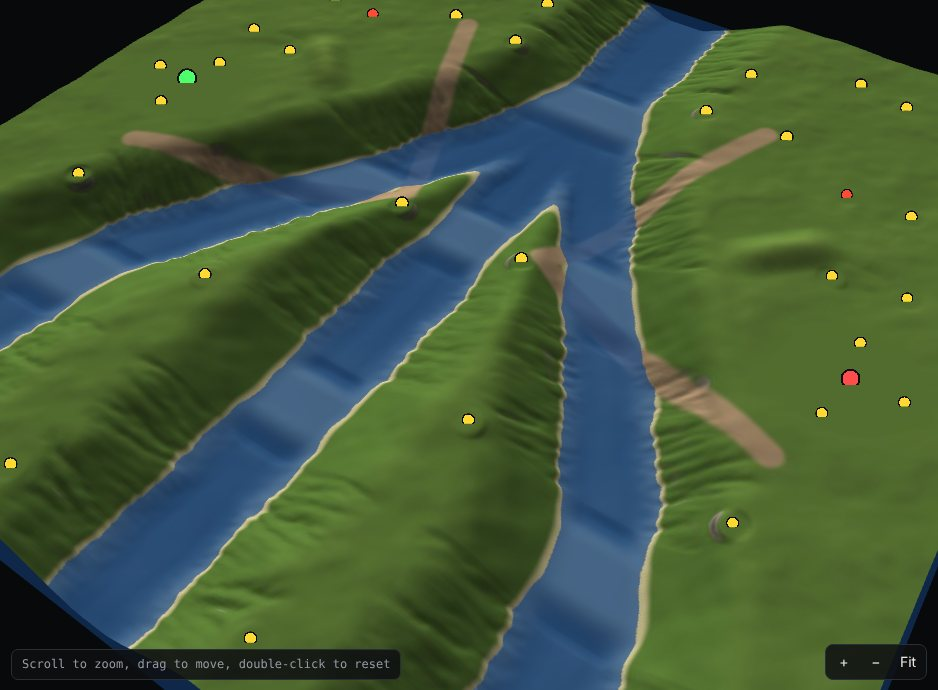
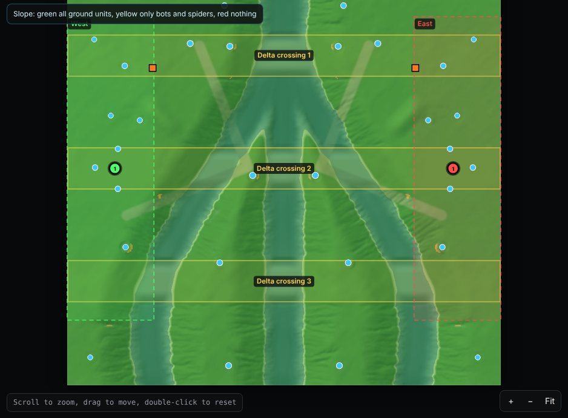
Terrain
Raise, lower, flatten to a height, smooth, roughen and terrace; ramps from A to B; a stamp that copies terrain, turned or mirrored.
Paint
Paths, concrete, scorch marks and lava crust, with an eraser, polygon fill and height-band fill.
Objects
Move metal spots, geovents, start points and start boxes, also several at once; add or remove trees, rocks and wrecks.
Overview
Live metal balance per team, an edit list with on and off per edit, contour lines and zoom up to 8x.
30 map templates
Every template has its own settings, and every seed gives a different map.
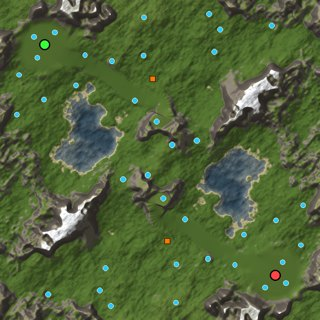
Procedural Skirmish
Classic 1v1 or team map from noise terrain: hills, plateaus, canyons, islands or craters. Ramps are carved automatically so tanks reach every base and metal spot.
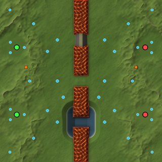
Chokepoint Front
West vs East, split by a long rock barrier. A few gates lead through: level ground for everyone, rock humps only bots can climb, or water channels for hovers and amphibians.
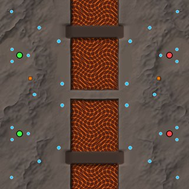
River Crossing
West vs East across a river or a lava lake. Low fords cross it; with lava tides the fords flood every few minutes (on-screen countdown) while a causeway in the middle stays safe.
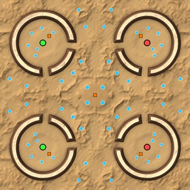
Arena (4 players)
Four bases, each inside a rock ring with gates. Safe economy inside, open ground outside and a rich centre. Plays as 2v2 or as a 4-player free-for-all.
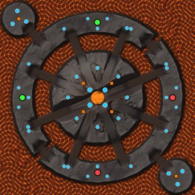
Volcano
A volcano island in a sea of lava, ringed by islands with four bases (20x20). Every few minutes the volcano erupts: lava bombs rain on the slopes and the rising lava floods every causeway.
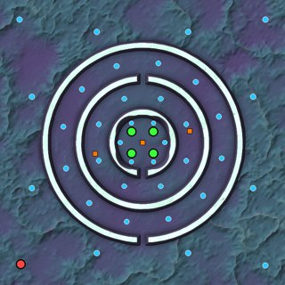
Chicken Defense
Co-op against chickens. Players start inside nested ring walls whose gates alternate, so chickens walk the longest way and players can fall back ring by ring.
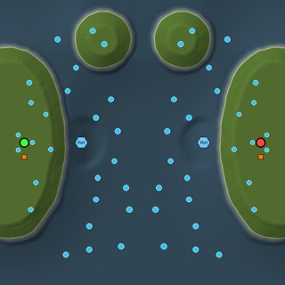
Open Sea
Coastal bases face a broad ocean with underwater expansion fields. Ships control the open water while amphibians and hovers raid the beaches.
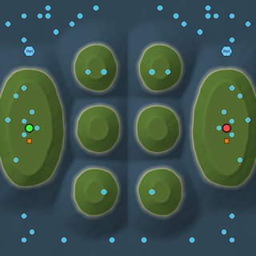
Archipelago
Home islands and scattered expansion islands divide a deep sea into winding fleet routes. Capture island economy with amphibians and defend underwater resources with ships.
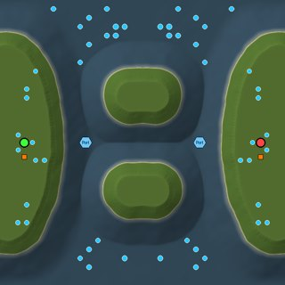
Island Straits
Long central islands split the sea into fleet passages between opposing coastal bases. Fight for the straits and use amphibious landings to capture the central islands.
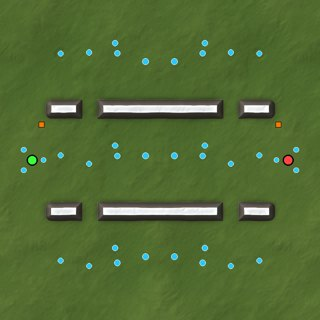
Three Lanes
Three parallel battle lanes share a rear staging area. Rocky ridges divide the fronts; side crossings let armies switch lanes and threaten exposed expansion fields.
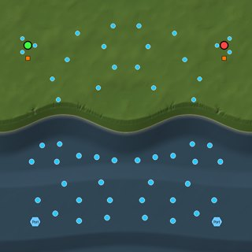
Coastal Front
A continuous mainland front runs beside a broad coastal sea. Fight across land, raid the shoreline with ships, or land amphibious forces behind the front.
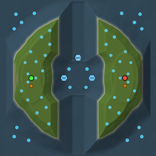
Atoll
Opposing island arcs surround a contested lagoon. Two deep entrances link the lagoon to the outer ocean; control the inside route or sail around the island flanks.
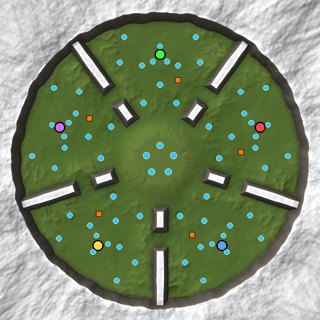
FFA Ring
Free-for-all: every player gets an identical sector of a round battlefield. Rock ridges separate neighbours, with a pass between each pair; the richest metal waits in the centre, where all players meet. A mountain rim closes the map.
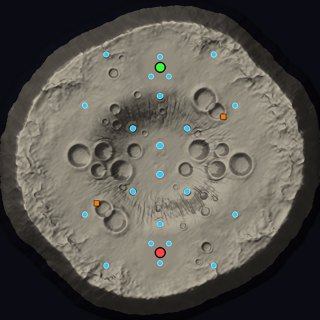
Asteroid
A cratered asteroid floating in space: a high ring of rock around a lower central basin, rough flanks and a steep edge that drops into the void - units and buildings down there are destroyed. Low gravity, a starry sky. Every player gets an identical sector.
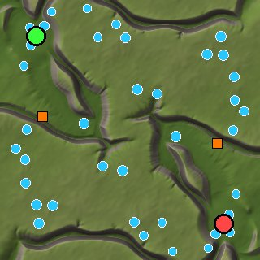
Procedural Highlands
Seeded highland regions become irregular mesas, rounded massifs or stepped uplands. Valleys, expansion sites and automatically carved tank ramps change with every seed.
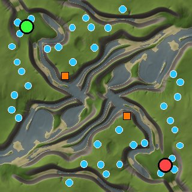
Procedural Watershed
Seeded river branches carve braided channels, broad wetlands or dry ravines. Changing the seed reshapes the drainage network; automatic crossings keep land armies connected.
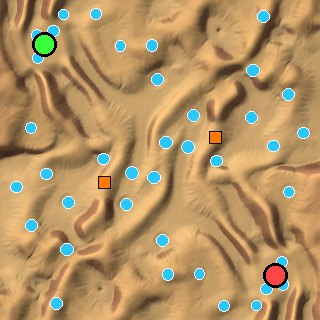
Procedural Dune Sea
Changing winds and warped noise create long dune chains, crescent fields or intersecting star dunes. Seeded rocky uplands interrupt the sand; tanks receive natural valleys and automatic ramps.
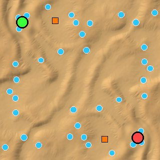
Open Dunes
Broad, low dune waves and open basins favour mobile armies and wide flanks. Seeded winds and small rocky outcrops change cover without a dominant barrier.
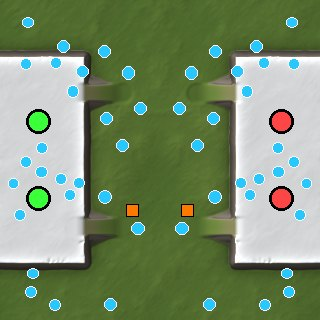
Twin Plateaus
Each team starts on a high plateau with several deliberate ramps into a shared lowland. Defend the home height, contest lowland metal and switch pressure between the ramps.
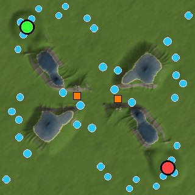
Lake District
Several seeded lake basins interrupt a connected mainland. Dry central routes and an outer land belt keep armies moving, while amphibians can cross the lakes and raid exposed shores.
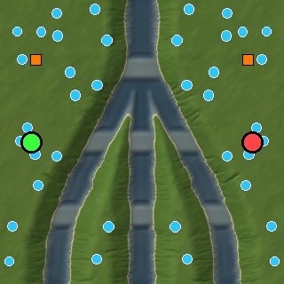
River Delta
A central river fans into several channels around contested delta islands. Cross at broad fords or raised causeways, switch between crossing fronts and use amphibious routes.
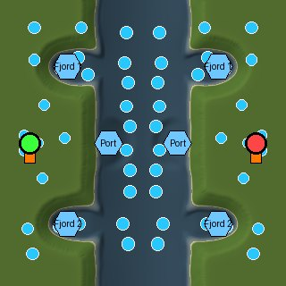
Fjord Coast
Deep inlets cut into opposing mainlands and shelter local fleet approaches. Hold the bay mouths, raid the inner shores and use amphibious landings behind the headlands.
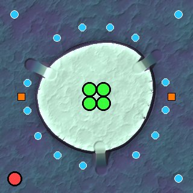
Chicken Mesa
Defend one shared high mesa against chicken waves using several ramps. When the outer approaches fail, fall back to a central position.
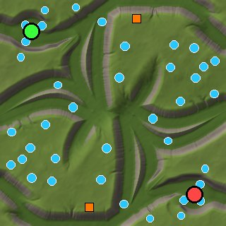
Canyon Network
A seeded network of branching ravines creates parallel routes, exposed junctions and deliberate cross-canyon passes. Each seed reshapes the canyon layout and changes where armies can switch fronts.
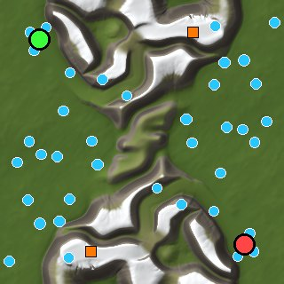
Mountain Spine
A winding mountain ridge divides the battlefield. Tanks use broad low valleys, bots cross shorter passes, and spiders can flank over the steep sides; each seed changes the ridge and pass positions.
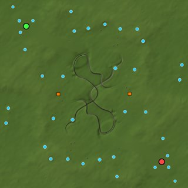
Crater Basin
A contested crater basin sits inside a broad, traversable rim. Four marked ramps connect the basin to the rim, while a lower outer circuit supports flanking and mirrored resource expansion.
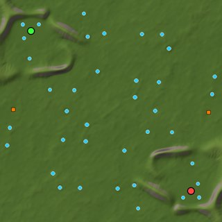
Fortress Front
Mirrored forward positions face a shared battlefield. Each low defensive shoulder has several sorties, while paired expansions lie beyond the home perimeter.
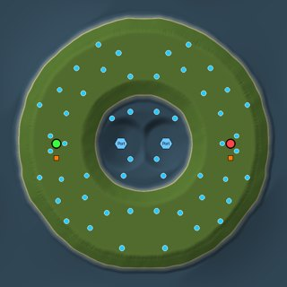
Inland Sea
A connected land rim circles a large inland sea. Ground forces take the long route around the shore while fleets cross the lake quickly between the opposing ports.
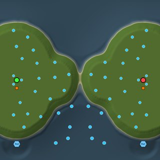
Peninsula
Opposing peninsulas project into open water, with defensible necks, long exposed coasts and broad side-landing opportunities.
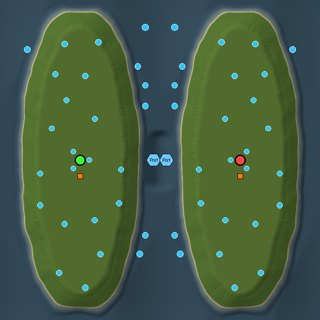
Island Continents
Two broad continents give each side room for a substantial land front. A deep channel separates them, so fleets carry units to exposed shores and create new landing fronts.
Questions
Is Atlas Map Forge free?
Yes. It is open source under the GPL 2.0 or later, and the Windows and Linux programs are free downloads.
Do I need to install anything?
No. On Windows you start AtlasMapForge.exe; on Linux you unpack the archive and start ./AtlasMapForge, which opens the app in your web browser. Python is not needed.
Where do the maps go?
The Forge finds your Zero-K folder (Steam or the standalone version) and builds the map straight into its maps folder, so it shows up in the Zero-K lobby right away.
Can I play generated maps online?
Yes, in passworded rooms. New maps are "unsupported" on zero-k.info until the Zero-K team approves them.
Why does Windows warn me?
The program is not code-signed yet. Click "More info", then "Run anyway". Every release is built and tested automatically on GitHub from the public source code.
Does it make maps for Beyond All Reason?
Yes, experimental since version 0.6. Pick Beyond All Reason at the top of the app. BAR takes start boxes from its lobby, so the app shows the !addBox commands for the host, and size, type and description in BAR's map list stay empty for maps outside BAR's map database.
Can I change a generated map by hand?
Yes. The editor shapes terrain, paints paths and scorch marks, places trees, rocks and wrecks, and moves metal spots, geovents, start points and start boxes. Symmetry and the reachability checks are kept for every edit.